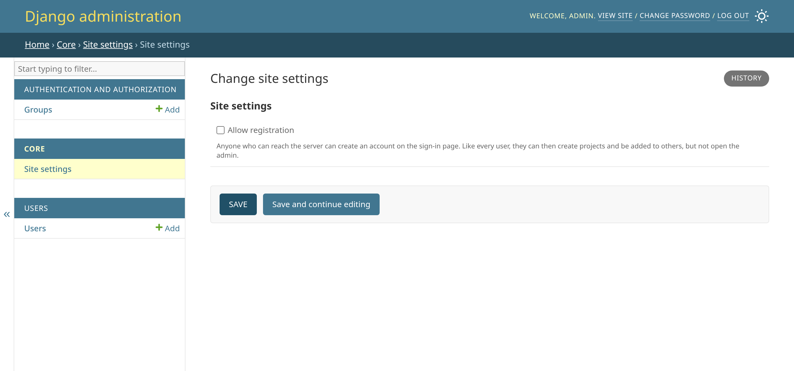

Users and site settings
Administrators manage the accounts and the settings of a server in the admin, at /admin/ on the server’s address, for example http://arbiter.example.org:8000/admin/. Only administrator accounts can open it; the first one is created when the server is set up.
Everything else is done in Arbiter itself: who works in which project, and in which role, is set by the project leads, see Create a project.
Site settings
Site settings, under Core in the admin, holds the settings for the whole server. There is one so far:
Allow registration: anyone who can reach the server can create an account on the sign-in page. Switched off, which is the default, only administrators create accounts.


The site settings in the admin.
Tick the box and click Save. The sign-in page then has a Create one link to the registration form, see Signing in. Accounts created there are ordinary users: like every user, they can create projects and be added to others, but they cannot open the admin. Untick the box to close registration again; the accounts made in the meantime stay.
Open registration suits a server for a course or a large team. On an open server, anyone with the address can create an account and see the usernames of everyone else when a project is set up.
Add a user
Under Users, click Add user.
Enter a username and a password twice, and click Save.
On the next page, add the email address if you like, and click Save again.
Give the new user their username and password. They can change the password, and add their name and email address, on their profile.
A new user has no projects. A project lead adds them to a project when creating it.
Reset a password
The admin cannot set a password for someone else. Do it on the server:
docker compose exec web python manage.py changepassword USERNAME
Lock an account
To stop someone from signing in, open their account under Users, untick Active and click Save. Everything they have done stays: their labels, messages and decisions remain part of the projects and their exports. Tick Active again to let them back in.
Do not delete accounts. Deleting a user also deletes the projects they created, with everything in them, and their labels and decisions in every other project.
More administrators
To give someone else access to the admin, create an administrator account for them on the server:
docker compose exec web python manage.py createsuperuser
The admin also offers Staff status, Groups and Permissions for each user. Arbiter does not use them: what someone may do in a project depends only on their role in it.